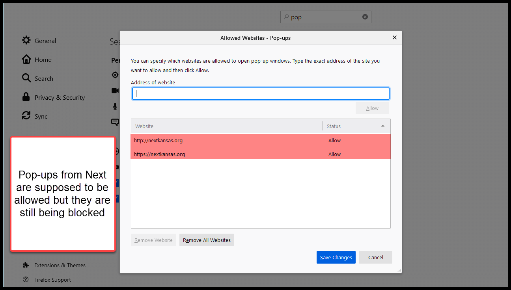
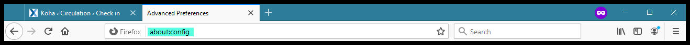
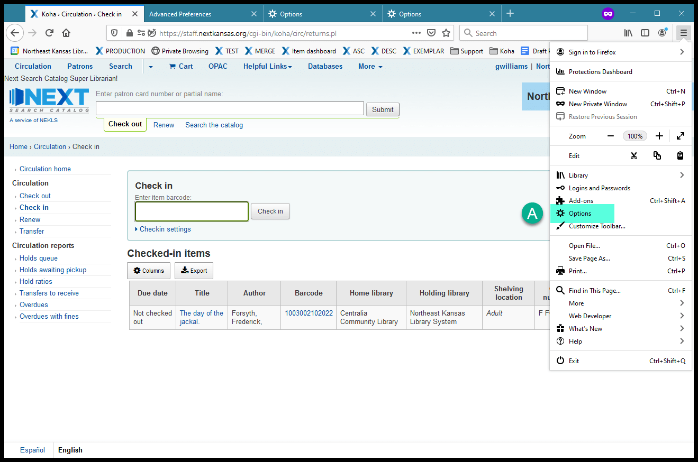
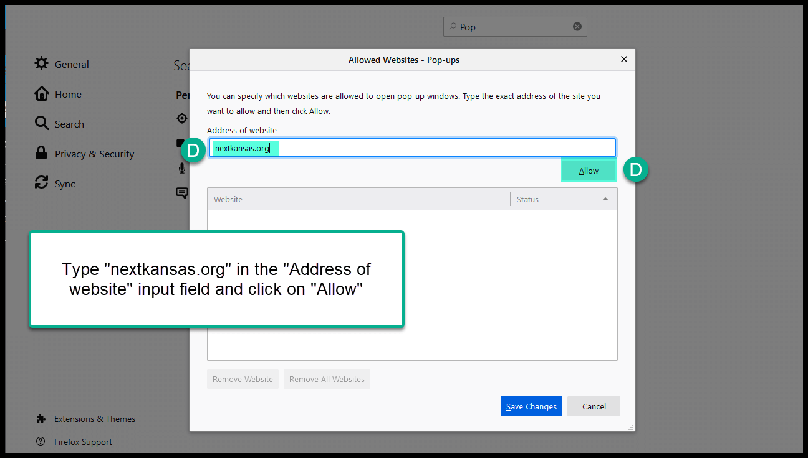

Firefox - Pop-up blocker prevents printing¶
Firefox version 87 was released on March 23, 2021, and it includes a security feature that makes “Private browsing mode” more secure by refusing to allow exceptions for the pop-up blocker.
The practical effect for Next Search Catalog is that, if you’re in private browsing mode in Firefox and you check in an item that is on hold and needs to be shipped to another library, you have to override the pop-up blocker for every transaction.
Symptoms:¶
If you check in an item with a request at another library and you click “Print slip and confirm,” if you have this problem you should see a “Firefox prevented this site from opening a pop-up window” warning and when you click the “Options” button, “Allow pop-ups for staff.nextkansas.org” will be grey and un-clickable
If you do click on “Edit Pop-up Blocker options …” staff.nextkansas.org or nextkansas.org is either already listed as an exception - or adding them as an exception makes no difference

Solution:¶
Go to the address bar and type “about:config” and hit enter

Click on “Accept the Risk and Continue” when you see the security .. warning:

In the search bar type “isolateby.privatebrowsing”
Click on the back and forth arrow to change “isolateby.privatebrowsing” from “true” to “false”
Once “isolateby.privatebrowsing” is set to “false” close the browser
Reopen the browser and go to the options page and make sure nextkansas.org is listed as an exception - if it is not, add it and click on “Save changes”


Check in an item with a request at another library and click “Print slip and confirm.” This should have solved the problem.